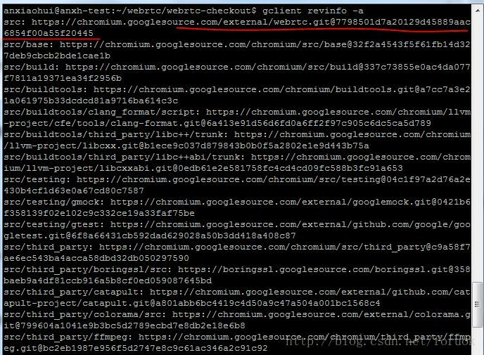

最近实验了下如何让WebRTC支持H264编码，记录下，供有需要的人参考。
说明一下，我是在 Ubuntu Server 14.04 下编译的 WebRTC ，使用 native（C++） api 开发 WebRTC 应用。所以我的调整都是基于 native 代码。
最终的效果是浏览器可以用H264发送视频，也可以接收H264视频。
注意，WebRTC 使用 OpenH264 来做 encoder （见 h264_encoder_impl.cc），使用 ffmpeg 来做 decoder （见 h264_decoder_impl.cc ）。
代码版本
本文对应的代码是2017年2月8号的，可以使用 gclient revinfo -a来查看具体版本，如下：

编译选项调整
WebRTC可以支持H264，但在Linux下编译时，默认没有打开。
rtc_use_h264，这个开关控制了是否使用 H264 （对应C++代码中的宏 WEBRTC_USE_H264），在 webrtc/webrtc.gni 文件中定义：
rtc_use_h264 = proprietary_codecs && !is_android && !is_ios
proprietary_codecs 在 build/config/features.gni 中定义：
proprietary_codecs = is_chrome_branded || is_chromecast
我在 Linux 下编译，branded 默认是 Chromium ，所以，proprietary_codecs 默认就是 false 。
想来想去，只好通过 gn gen 时传入 args 来调整比较方便，使用下面的命令来生成 ninja 构建文件：
gn gen out/h264Debug --args="proprietary_codecs=true"
执行完毕后，可以使用下列命令验证一下：
gn args out/h264Debug --list=proprietary_codecs
gn args out/h264Debug --list=rtc_use_h264
看到 Current Value 为 true，就说明这个选项已经生效了。
打开 rtc_use_h264 ，OpenH264 的编码支持就使能了。
WebRTC内部会使用 ffmpeg 来解码 H264 （见 h264_decoder_impl.cc ），与 ffmpeg 相关的还有一个选项——rtc_initialize_ffmpeg，这个也得为 true ，否则 ffmpeg 的 avcodec 不会初始化，用不成。
rtc_initialize_ffmpeg 定义在 webrtc/webrtc.gni 中定义：
rtc_initialize_ffmpeg = !build_with_crhome
因为我们为 native 开发而编译，build_with_chrome 默认为 false ，所以 rtc_initialize_ffmpeg 默认为 true ，不用调整。
rtc_initialize_ffmpeg 开关对应一个 C++ 代码中的宏 WEBRTC_INITIALIZE_FFMPEG 。
要使用 ffmpeg 的 h264 decoder 功能，还需要修改一个宏： FFMPEG_H264_DECODER。在 config.h 文件中，路径是 third_party/chromium/config/chromium/linux/x64。原来定义如下：
#define CONFIG_H264_DECODER 0
修改为 1 即可。这样 avcodec_register_all() 方法才会把 H264 decoder 注册到系统中。
等下，实际上还有一部分非常重要的工作要做。因为 linux 下编译 WebRtc ，默认生成的 ninja 构建文件中，没有 ffmpeg 的 h264 decoder 对应的源码，所以即便你打开 FFMPEG_H264_DECODER 也不管用，必须得修改 third_party/ffmpeg/ffmpeg_generated.gni 文件，找到包含 h264的那些条件，打开即可。
注：因为我一开始编译时没有打开 H264 支持，所以在修改了ffmpeg_generated.gni 文件后，使用 gn gen 生成 ninja 构建文件时，指定了一个新的目录，然后把 ffmpeg 相关的 ninja 文件（三个），拷贝到了原来的构建目录中，然后使用 ninja ffmpeg 命令来编译出 so 文件。
codec 的顺序调整
网页使用 WebRTC 发送 SDP ，进行协商时，默认的 codec 顺序是：
- VP8
- VP9
- H264
在 C++ 代码里，会默认选择第一个来匹配（从PeerConnection::CreateAnswer/SetRemoteDescription两个方法跟进去，可以看到）。所以，我们要修改 C++ 代码，来改变这个选择逻辑。
WebRtcVideoChannel2（webrtcvideoengine2.cc）使用的 codec ，来自 InternalEncoderFactory类（internalencoderfactory.cc），不管是作为发送端还是接收端，编码格式都来自这里。
在InternalEncoderFactory的构造函数里，可以调整 codec 的顺序，默认代码如下：
supported_codecs_.push_back(cricket::VideoCodec(kVp8CodecName));
if (webrtc::VP9Encoder::IsSupported())
supported_codecs_.push_back(cricket::VideoCodec(kVp9CodecName));
if (webrtc::H264Encoder::IsSupported()) {
cricket::VideoCodec codec(kH264CodecName);
// TODO(magjed): Move setting these parameters into webrtc::H264Encoder
// instead.
codec.SetParam(kH264FmtpProfileLevelId,
kH264ProfileLevelConstrainedBaseline);
codec.SetParam(kH264FmtpLevelAsymmetryAllowed, "1");
supported_codecs_.push_back(std::move(codec));
}
supported_codecs_.push_back(cricket::VideoCodec(kRedCodecName));
supported_codecs_.push_back(cricket::VideoCodec(kUlpfecCodecName));
....
只要把 H264 那个 codec 调整到前面即可。
做了这个调整，Native app 作为发送视频的一端，在 SDP 协商时， H264 的支持就会放在前面，另外一端如果支持 H264 解码，就会优先选择 H264 格式，两边就能以 H264 来交互视频流了。
浏览器作为发送视频的一端时，它发过来的视频格式顺序是 VP8、VP9、H264，Native C++代码中会根据这个顺序来调整本地的 codec 的顺序，代码在 mediasession.cc 中：
template <class C>
static void NegotiateCodecs(const std::vector<C>& local_codecs,
const std::vector<C>& offered_codecs,
std::vector<C>* negotiated_codecs) {
for (const C& ours : local_codecs) {
C theirs;
// Note that we intentionally only find one matching codec for each of our
// local codecs, in case the remote offer contains duplicate codecs.
if (FindMatchingCodec(local_codecs, offered_codecs, ours, &theirs)) {
C negotiated = ours;
negotiated.IntersectFeedbackParams(theirs);
if (IsRtxCodec(negotiated)) {
const auto apt_it =
theirs.params.find(kCodecParamAssociatedPayloadType);
// FindMatchingCodec shouldn't return something with no apt value.
RTC_DCHECK(apt_it != theirs.params.end());
negotiated.SetParam(kCodecParamAssociatedPayloadType, apt_it->second);
}
if (CodecNamesEq(ours.name.c_str(), kH264CodecName)) {
webrtc::H264::GenerateProfileLevelIdForAnswer(
ours.params, theirs.params, &negotiated.params);
}
negotiated.id = theirs.id;
negotiated.name = theirs.name;
negotiated_codecs->push_back(std::move(negotiated));
}
}
// RFC3264: Although the answerer MAY list the formats in their desired
// order of preference, it is RECOMMENDED that unless there is a
// specific reason, the answerer list formats in the same relative order
// they were present in the offer.
std::unordered_map<int, int> payload_type_preferences;
int preference = static_cast<int>(offered_codecs.size() + 1);
for (const C& codec : offered_codecs) {
payload_type_preferences[codec.id] = preference--;
}
std::sort(negotiated_codecs->begin(), negotiated_codecs->end(),
[&payload_type_preferences](const C& a, const C& b) {
return payload_type_preferences[a.id] >
payload_type_preferences[b.id];
});
}
最后那个 sort 调用，根据发送端的 codec 顺序重新调整了我们支持的解码格式的顺序。所以，我们在这里也需要修改一下，把排序的部分去掉，或者针对 H264 去掉。
重新编译
使用下列命令，可以编译特定模块：
ninja pc （针对 mediasession.cc ）
ninja media （针对 internalencoderfactory.cc 和 webrtcvideoengine2.cc ）
ninja ffmpeg （针对 ffmpeg ）
然后再编译你自己的 native app 。
相关阅读：